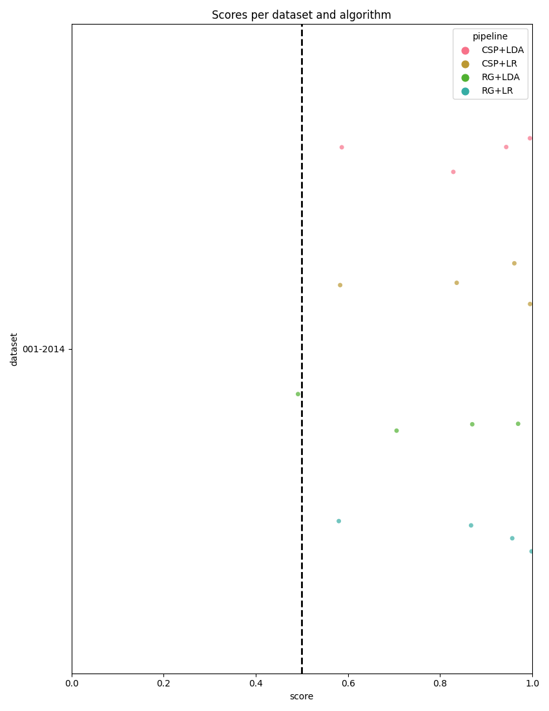
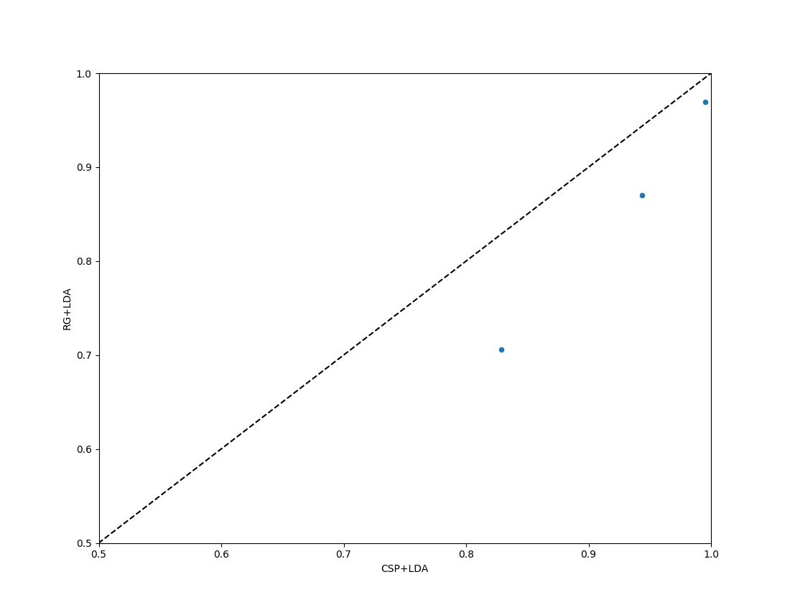
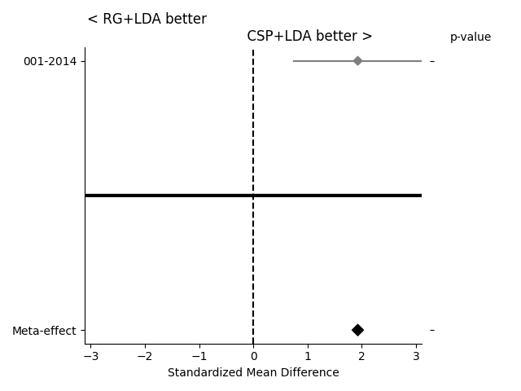
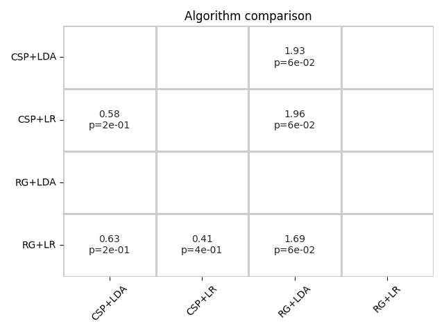

<!DOCTYPE html>

<html>
  <head>
    <meta charset="utf-8" />
    <meta name="viewport" content="width=device-width, initial-scale=1.0" />
    <title>Statistical Analysis &#8212; moabb 0.4.4 documentation</title>
    <link rel="stylesheet" href="../../_static/pygments.css" type="text/css" />
    <link rel="stylesheet" href="../../_static/bootstrap-sphinx.css" type="text/css" />
    <link rel="stylesheet" type="text/css" href="../../_static/gallery.css" />
    <link rel="stylesheet" type="text/css" href="../../_static/gallery-binder.css" />
    <link rel="stylesheet" type="text/css" href="../../_static/gallery-dataframe.css" />
    <link rel="stylesheet" type="text/css" href="../../_static/gallery-rendered-html.css" />
    <script id="documentation_options" data-url_root="../../" src="../../_static/documentation_options.js"></script>
    <script src="../../_static/jquery.js"></script>
    <script src="../../_static/underscore.js"></script>
    <script src="../../_static/doctools.js"></script>
    <link rel="index" title="Index" href="../../genindex.html" />
    <link rel="search" title="Search" href="../../search.html" />
<meta charset='utf-8'>
<meta http-equiv='X-UA-Compatible' content='IE=edge,chrome=1'>
<meta name='viewport' content='width=device-width, initial-scale=1.0, maximum-scale=1'>
<meta name="apple-mobile-web-app-capable" content="yes">
<script type="text/javascript" src="../../_static/js/jquery-1.12.4.min.js "></script>
<script type="text/javascript" src="../../_static/js/jquery-fix.js "></script>
<script type="text/javascript" src="../../_static/bootstrap-3.4.1/js/bootstrap.min.js "></script>
<script type="text/javascript" src="../../_static/bootstrap-sphinx.js "></script>

  </head><body>

  <div id="navbar" class="navbar navbar-inverse navbar-default navbar-fixed-top">
    <div class="container">
      <div class="navbar-header">
        <!-- .btn-navbar is used as the toggle for collapsed navbar content -->
        <button type="button" class="navbar-toggle" data-toggle="collapse" data-target=".nav-collapse">
          <span class="icon-bar"></span>
          <span class="icon-bar"></span>
          <span class="icon-bar"></span>
        </button>
        <a class="navbar-brand" href="../../index.html">
          moabb</a>
        <span class="navbar-text navbar-version pull-left"><b>0.4.4</b></span>
      </div>

        <div class="collapse navbar-collapse nav-collapse">
          <ul class="nav navbar-nav">
            
                <li><a href="../../whats_new.html">What's new</a></li>
                <li><a href="../../api.html">API</a></li>
                <li><a href="../index.html">Gallery</a></li>
                <li><a href="../../auto_tutorials/index.html">Tutorials</a></li>
            
            
              <li class="dropdown globaltoc-container">
  <a role="button"
     id="dLabelGlobalToc"
     data-toggle="dropdown"
     data-target="#"
     href="../../index.html">Site <b class="caret"></b></a>
  <ul class="dropdown-menu globaltoc"
      role="menu"
      aria-labelledby="dLabelGlobalToc"><ul>
<li class="toctree-l1"><a class="reference internal" href="../../whats_new.html">What’s new</a><ul>
<li class="toctree-l2"><a class="reference internal" href="../../whats_new.html#develop-branch">Develop branch</a></li>
<li class="toctree-l2"><a class="reference internal" href="../../whats_new.html#version-0-4-4-stable-pypi">Version - 0.4.4  (Stable - PyPi)</a></li>
<li class="toctree-l2"><a class="reference internal" href="../../whats_new.html#version-0-4-3">Version - 0.4.3</a></li>
<li class="toctree-l2"><a class="reference internal" href="../../whats_new.html#version-0-4-2">Version - 0.4.2</a></li>
<li class="toctree-l2"><a class="reference internal" href="../../whats_new.html#version-0-4-1">Version - 0.4.1</a></li>
<li class="toctree-l2"><a class="reference internal" href="../../whats_new.html#version-0-4-0">Version - 0.4.0</a></li>
<li class="toctree-l2"><a class="reference internal" href="../../whats_new.html#version-0-3-0">Version 0.3.0</a></li>
<li class="toctree-l2"><a class="reference internal" href="../../whats_new.html#version-0-2-1">Version 0.2.1</a></li>
<li class="toctree-l2"><a class="reference internal" href="../../whats_new.html#version-0-2-0">Version 0.2.0</a></li>
</ul>
</li>
</ul>
<p class="caption"><span class="caption-text">Main classes of MOABB:</span></p>
<ul>
<li class="toctree-l1"><a class="reference internal" href="../../datasets.html">Datasets</a><ul>
<li class="toctree-l2"><a class="reference internal" href="../../datasets.html#motor-imagery-datasets">Motor Imagery Datasets</a></li>
<li class="toctree-l2"><a class="reference internal" href="../../datasets.html#erp-datasets">ERP Datasets</a></li>
<li class="toctree-l2"><a class="reference internal" href="../../datasets.html#ssvep-datasets">SSVEP Datasets</a></li>
<li class="toctree-l2"><a class="reference internal" href="../../datasets.html#base-utils">Base &amp; Utils</a></li>
</ul>
</li>
<li class="toctree-l1"><a class="reference internal" href="../../evaluations.html">Evaluations</a><ul>
<li class="toctree-l2"><a class="reference internal" href="../../evaluations.html#id1">Evaluations</a></li>
<li class="toctree-l2"><a class="reference internal" href="../../evaluations.html#base-utils">Base &amp; Utils</a></li>
</ul>
</li>
<li class="toctree-l1"><a class="reference internal" href="../../paradigms.html">Paradigms</a><ul>
<li class="toctree-l2"><a class="reference internal" href="../../paradigms.html#motor-imagery-paradigms">Motor Imagery Paradigms</a></li>
<li class="toctree-l2"><a class="reference internal" href="../../paradigms.html#p300-paradigms">P300 Paradigms</a></li>
<li class="toctree-l2"><a class="reference internal" href="../../paradigms.html#ssvep-paradigms">SSVEP Paradigms</a></li>
<li class="toctree-l2"><a class="reference internal" href="../../paradigms.html#base-utils">Base &amp; Utils</a></li>
</ul>
</li>
<li class="toctree-l1"><a class="reference internal" href="../../pipelines.html">Pipelines</a><ul>
<li class="toctree-l2"><a class="reference internal" href="../../pipelines.html#id1">Pipelines</a></li>
<li class="toctree-l2"><a class="reference internal" href="../../pipelines.html#base-utils">Base &amp; Utils</a></li>
</ul>
</li>
<li class="toctree-l1"><a class="reference internal" href="../../analysis.html">Analysis</a><ul>
<li class="toctree-l2"><a class="reference internal" href="../../analysis.html#plotting">Plotting</a></li>
<li class="toctree-l2"><a class="reference internal" href="../../analysis.html#statistics">Statistics</a></li>
</ul>
</li>
</ul>
</ul>
</li>
              
                <li class="dropdown">
  <a role="button"
     id="dLabelLocalToc"
     data-toggle="dropdown"
     data-target="#"
     href="#">Page <b class="caret"></b></a>
  <ul class="dropdown-menu localtoc"
      role="menu"
      aria-labelledby="dLabelLocalToc"><ul>
<li><a class="reference internal" href="#">Statistical Analysis</a><ul>
<li><a class="reference internal" href="#results-generation">Results Generation</a></li>
<li><a class="reference internal" href="#create-pipelines">Create Pipelines</a></li>
<li><a class="reference internal" href="#evaluation">Evaluation</a></li>
<li><a class="reference internal" href="#moabb-plotting">MOABB Plotting</a></li>
<li><a class="reference internal" href="#statistical-testing-and-further-plots">Statistical Testing and Further Plots</a></li>
</ul>
</li>
</ul>
</ul>
</li>
              
            
            
            
            
            
          </ul>

          
            
<form class="navbar-form navbar-right" action="../../search.html" method="get">
 <div class="form-group">
  <input type="text" name="q" class="form-control" placeholder="Search" />
 </div>
  <input type="hidden" name="check_keywords" value="yes" />
  <input type="hidden" name="area" value="default" />
</form>
          
        </div>
    </div>
  </div>

<div class="container">
  <div class="row">
    <div class="body col-md-12 content" role="main">
      
  <div class="sphx-glr-download-link-note admonition note">
<p class="admonition-title">Note</p>
<p>Click <a class="reference internal" href="#sphx-glr-download-auto-examples-advanced-examples-plot-statistical-analysis-py"><span class="std std-ref">here</span></a>
to download the full example code</p>
</div>
<div class="sphx-glr-example-title section" id="statistical-analysis">
<span id="sphx-glr-auto-examples-advanced-examples-plot-statistical-analysis-py"></span><h1>Statistical Analysis<a class="headerlink" href="#statistical-analysis" title="Permalink to this headline">¶</a></h1>
<p>The MOABB codebase comes with convenience plotting utilities and some
statistical testing. This tutorial focuses on what those exactly are and how
they can be used.</p>
<div class="highlight-default notranslate"><div class="highlight"><pre><span></span><span class="c1"># Authors: Vinay Jayaram &lt;vinayjayaram13@gmail.com&gt;</span>
<span class="c1">#</span>
<span class="c1"># License: BSD (3-clause)</span>
<span class="c1"># sphinx_gallery_thumbnail_number = -2</span>

<span class="kn">import</span> <span class="nn">matplotlib.pyplot</span> <span class="k">as</span> <span class="nn">plt</span>
<span class="kn">from</span> <span class="nn">mne.decoding</span> <span class="kn">import</span> <a href="https://mne.tools/stable/generated/mne.decoding.CSP.html#mne.decoding.CSP" title="mne.decoding.CSP" class="sphx-glr-backref-module-mne-decoding sphx-glr-backref-type-py-class"><span class="n">CSP</span></a>
<span class="kn">from</span> <span class="nn">pyriemann.estimation</span> <span class="kn">import</span> <a href="https://scikit-learn.org/stable/modules/generated/sklearn.base.BaseEstimator.html#sklearn.base.BaseEstimator" title="sklearn.base.BaseEstimator" class="sphx-glr-backref-module-sklearn-base sphx-glr-backref-type-py-class"><span class="n">Covariances</span></a>
<span class="kn">from</span> <span class="nn">pyriemann.tangentspace</span> <span class="kn">import</span> <a href="https://scikit-learn.org/stable/modules/generated/sklearn.base.BaseEstimator.html#sklearn.base.BaseEstimator" title="sklearn.base.BaseEstimator" class="sphx-glr-backref-module-sklearn-base sphx-glr-backref-type-py-class"><span class="n">TangentSpace</span></a>
<span class="kn">from</span> <span class="nn">sklearn.discriminant_analysis</span> <span class="kn">import</span> <span class="n">LinearDiscriminantAnalysis</span> <span class="k">as</span> <a href="https://scikit-learn.org/stable/modules/generated/sklearn.discriminant_analysis.LinearDiscriminantAnalysis.html#sklearn.discriminant_analysis.LinearDiscriminantAnalysis" title="sklearn.discriminant_analysis.LinearDiscriminantAnalysis" class="sphx-glr-backref-module-sklearn-discriminant_analysis sphx-glr-backref-type-py-class"><span class="n">LDA</span></a>
<span class="kn">from</span> <span class="nn">sklearn.linear_model</span> <span class="kn">import</span> <a href="https://scikit-learn.org/stable/modules/generated/sklearn.linear_model.LogisticRegression.html#sklearn.linear_model.LogisticRegression" title="sklearn.linear_model.LogisticRegression" class="sphx-glr-backref-module-sklearn-linear_model sphx-glr-backref-type-py-class"><span class="n">LogisticRegression</span></a>
<span class="kn">from</span> <span class="nn">sklearn.pipeline</span> <span class="kn">import</span> <a href="https://scikit-learn.org/stable/modules/generated/sklearn.pipeline.make_pipeline.html#sklearn.pipeline.make_pipeline" title="sklearn.pipeline.make_pipeline" class="sphx-glr-backref-module-sklearn-pipeline sphx-glr-backref-type-py-function"><span class="n">make_pipeline</span></a>

<span class="kn">import</span> <span class="nn">moabb</span>
<span class="kn">import</span> <span class="nn">moabb.analysis.plotting</span> <span class="k">as</span> <span class="nn">moabb_plt</span>
<span class="kn">from</span> <span class="nn">moabb.analysis.meta_analysis</span> <span class="kn">import</span> <span class="p">(</span>  <span class="c1"># noqa: E501</span>
    <span class="n">compute_dataset_statistics</span><span class="p">,</span>
    <span class="n">find_significant_differences</span><span class="p">,</span>
<span class="p">)</span>
<span class="kn">from</span> <span class="nn">moabb.datasets</span> <span class="kn">import</span> <span class="n">BNCI2014001</span>
<span class="kn">from</span> <span class="nn">moabb.evaluations</span> <span class="kn">import</span> <a href="https://docs.python.org/3/library/abc.html#abc.ABC" title="abc.ABC" class="sphx-glr-backref-module-abc sphx-glr-backref-type-py-class"><span class="n">CrossSessionEvaluation</span></a>
<span class="kn">from</span> <span class="nn">moabb.paradigms</span> <span class="kn">import</span> <span class="n">LeftRightImagery</span>


<span class="n">moabb</span><span class="o">.</span><span class="n">set_log_level</span><span class="p">(</span><span class="s2">&quot;info&quot;</span><span class="p">)</span>

<span class="nb">print</span><span class="p">(</span><span class="vm">__doc__</span><span class="p">)</span>
</pre></div>
</div>
<div class="section" id="results-generation">
<h2>Results Generation<a class="headerlink" href="#results-generation" title="Permalink to this headline">¶</a></h2>
<p>First we need to set up a paradigm, dataset list, and some pipelines to
test. This is explored more in the examples – we choose left vs right
imagery paradigm with a single bandpass. There is only one dataset here but
any number can be added without changing this workflow.</p>
</div>
<div class="section" id="create-pipelines">
<h2>Create Pipelines<a class="headerlink" href="#create-pipelines" title="Permalink to this headline">¶</a></h2>
<p>Pipelines must be a dict of sklearn pipeline transformer.</p>
<p>The CSP implementation from MNE is used. We selected 8 CSP components, as
usually done in the literature.</p>
<p>The Riemannian geometry pipeline consists in covariance estimation, tangent
space mapping and finally a logistic regression for the classification.</p>
<div class="highlight-default notranslate"><div class="highlight"><pre><span></span><a href="https://docs.python.org/3/library/stdtypes.html#dict" title="builtins.dict" class="sphx-glr-backref-module-builtins sphx-glr-backref-type-py-class sphx-glr-backref-instance"><span class="n">pipelines</span></a> <span class="o">=</span> <span class="p">{}</span>

<a href="https://docs.python.org/3/library/stdtypes.html#dict" title="builtins.dict" class="sphx-glr-backref-module-builtins sphx-glr-backref-type-py-class sphx-glr-backref-instance"><span class="n">pipelines</span></a><span class="p">[</span><span class="s2">&quot;CSP+LDA&quot;</span><span class="p">]</span> <span class="o">=</span> <a href="https://scikit-learn.org/stable/modules/generated/sklearn.pipeline.make_pipeline.html#sklearn.pipeline.make_pipeline" title="sklearn.pipeline.make_pipeline" class="sphx-glr-backref-module-sklearn-pipeline sphx-glr-backref-type-py-function"><span class="n">make_pipeline</span></a><span class="p">(</span><a href="https://mne.tools/stable/generated/mne.decoding.CSP.html#mne.decoding.CSP" title="mne.decoding.CSP" class="sphx-glr-backref-module-mne-decoding sphx-glr-backref-type-py-class"><span class="n">CSP</span></a><span class="p">(</span><span class="n">n_components</span><span class="o">=</span><span class="mi">8</span><span class="p">),</span> <a href="https://scikit-learn.org/stable/modules/generated/sklearn.discriminant_analysis.LinearDiscriminantAnalysis.html#sklearn.discriminant_analysis.LinearDiscriminantAnalysis" title="sklearn.discriminant_analysis.LinearDiscriminantAnalysis" class="sphx-glr-backref-module-sklearn-discriminant_analysis sphx-glr-backref-type-py-class"><span class="n">LDA</span></a><span class="p">())</span>

<a href="https://docs.python.org/3/library/stdtypes.html#dict" title="builtins.dict" class="sphx-glr-backref-module-builtins sphx-glr-backref-type-py-class sphx-glr-backref-instance"><span class="n">pipelines</span></a><span class="p">[</span><span class="s2">&quot;RG+LR&quot;</span><span class="p">]</span> <span class="o">=</span> <a href="https://scikit-learn.org/stable/modules/generated/sklearn.pipeline.make_pipeline.html#sklearn.pipeline.make_pipeline" title="sklearn.pipeline.make_pipeline" class="sphx-glr-backref-module-sklearn-pipeline sphx-glr-backref-type-py-function"><span class="n">make_pipeline</span></a><span class="p">(</span><a href="https://scikit-learn.org/stable/modules/generated/sklearn.base.BaseEstimator.html#sklearn.base.BaseEstimator" title="sklearn.base.BaseEstimator" class="sphx-glr-backref-module-sklearn-base sphx-glr-backref-type-py-class"><span class="n">Covariances</span></a><span class="p">(),</span> <a href="https://scikit-learn.org/stable/modules/generated/sklearn.base.BaseEstimator.html#sklearn.base.BaseEstimator" title="sklearn.base.BaseEstimator" class="sphx-glr-backref-module-sklearn-base sphx-glr-backref-type-py-class"><span class="n">TangentSpace</span></a><span class="p">(),</span> <a href="https://scikit-learn.org/stable/modules/generated/sklearn.linear_model.LogisticRegression.html#sklearn.linear_model.LogisticRegression" title="sklearn.linear_model.LogisticRegression" class="sphx-glr-backref-module-sklearn-linear_model sphx-glr-backref-type-py-class"><span class="n">LogisticRegression</span></a><span class="p">())</span>

<a href="https://docs.python.org/3/library/stdtypes.html#dict" title="builtins.dict" class="sphx-glr-backref-module-builtins sphx-glr-backref-type-py-class sphx-glr-backref-instance"><span class="n">pipelines</span></a><span class="p">[</span><span class="s2">&quot;CSP+LR&quot;</span><span class="p">]</span> <span class="o">=</span> <a href="https://scikit-learn.org/stable/modules/generated/sklearn.pipeline.make_pipeline.html#sklearn.pipeline.make_pipeline" title="sklearn.pipeline.make_pipeline" class="sphx-glr-backref-module-sklearn-pipeline sphx-glr-backref-type-py-function"><span class="n">make_pipeline</span></a><span class="p">(</span><a href="https://mne.tools/stable/generated/mne.decoding.CSP.html#mne.decoding.CSP" title="mne.decoding.CSP" class="sphx-glr-backref-module-mne-decoding sphx-glr-backref-type-py-class"><span class="n">CSP</span></a><span class="p">(</span><span class="n">n_components</span><span class="o">=</span><span class="mi">8</span><span class="p">),</span> <a href="https://scikit-learn.org/stable/modules/generated/sklearn.linear_model.LogisticRegression.html#sklearn.linear_model.LogisticRegression" title="sklearn.linear_model.LogisticRegression" class="sphx-glr-backref-module-sklearn-linear_model sphx-glr-backref-type-py-class"><span class="n">LogisticRegression</span></a><span class="p">())</span>

<a href="https://docs.python.org/3/library/stdtypes.html#dict" title="builtins.dict" class="sphx-glr-backref-module-builtins sphx-glr-backref-type-py-class sphx-glr-backref-instance"><span class="n">pipelines</span></a><span class="p">[</span><span class="s2">&quot;RG+LDA&quot;</span><span class="p">]</span> <span class="o">=</span> <a href="https://scikit-learn.org/stable/modules/generated/sklearn.pipeline.make_pipeline.html#sklearn.pipeline.make_pipeline" title="sklearn.pipeline.make_pipeline" class="sphx-glr-backref-module-sklearn-pipeline sphx-glr-backref-type-py-function"><span class="n">make_pipeline</span></a><span class="p">(</span><a href="https://scikit-learn.org/stable/modules/generated/sklearn.base.BaseEstimator.html#sklearn.base.BaseEstimator" title="sklearn.base.BaseEstimator" class="sphx-glr-backref-module-sklearn-base sphx-glr-backref-type-py-class"><span class="n">Covariances</span></a><span class="p">(),</span> <a href="https://scikit-learn.org/stable/modules/generated/sklearn.base.BaseEstimator.html#sklearn.base.BaseEstimator" title="sklearn.base.BaseEstimator" class="sphx-glr-backref-module-sklearn-base sphx-glr-backref-type-py-class"><span class="n">TangentSpace</span></a><span class="p">(),</span> <a href="https://scikit-learn.org/stable/modules/generated/sklearn.discriminant_analysis.LinearDiscriminantAnalysis.html#sklearn.discriminant_analysis.LinearDiscriminantAnalysis" title="sklearn.discriminant_analysis.LinearDiscriminantAnalysis" class="sphx-glr-backref-module-sklearn-discriminant_analysis sphx-glr-backref-type-py-class"><span class="n">LDA</span></a><span class="p">())</span>
</pre></div>
</div>
</div>
<div class="section" id="evaluation">
<h2>Evaluation<a class="headerlink" href="#evaluation" title="Permalink to this headline">¶</a></h2>
<p>We define the paradigm (LeftRightImagery) and the dataset (BNCI2014001).
The evaluation will return a DataFrame containing a single AUC score for
each subject / session of the dataset, and for each pipeline.</p>
<p>Results are saved into the database, so that if you add a new pipeline, it
will not run again the evaluation unless a parameter has changed. Results can
be overwritten if necessary.</p>
<div class="highlight-default notranslate"><div class="highlight"><pre><span></span><span class="n">paradigm</span> <span class="o">=</span> <span class="n">LeftRightImagery</span><span class="p">()</span>
<span class="n">dataset</span> <span class="o">=</span> <span class="n">BNCI2014001</span><span class="p">()</span>
<a href="https://docs.python.org/3/library/stdtypes.html#list" title="builtins.list" class="sphx-glr-backref-module-builtins sphx-glr-backref-type-py-class sphx-glr-backref-instance"><span class="n">dataset</span><span class="o">.</span><span class="n">subject_list</span></a> <span class="o">=</span> <a href="https://docs.python.org/3/library/stdtypes.html#list" title="builtins.list" class="sphx-glr-backref-module-builtins sphx-glr-backref-type-py-class sphx-glr-backref-instance"><span class="n">dataset</span><span class="o">.</span><span class="n">subject_list</span></a><span class="p">[:</span><span class="mi">4</span><span class="p">]</span>
<a href="https://docs.python.org/3/library/stdtypes.html#list" title="builtins.list" class="sphx-glr-backref-module-builtins sphx-glr-backref-type-py-class sphx-glr-backref-instance"><span class="n">datasets</span></a> <span class="o">=</span> <span class="p">[</span><span class="n">dataset</span><span class="p">]</span>
<a href="https://docs.python.org/3/library/functions.html#bool" title="builtins.bool" class="sphx-glr-backref-module-builtins sphx-glr-backref-type-py-class sphx-glr-backref-instance"><span class="n">overwrite</span></a> <span class="o">=</span> <span class="kc">True</span>  <span class="c1"># set to False if we want to use cached results</span>
<span class="n">evaluation</span> <span class="o">=</span> <a href="https://docs.python.org/3/library/abc.html#abc.ABC" title="abc.ABC" class="sphx-glr-backref-module-abc sphx-glr-backref-type-py-class"><span class="n">CrossSessionEvaluation</span></a><span class="p">(</span>
    <span class="n">paradigm</span><span class="o">=</span><span class="n">paradigm</span><span class="p">,</span> <a href="https://docs.python.org/3/library/stdtypes.html#list" title="builtins.list" class="sphx-glr-backref-module-builtins sphx-glr-backref-type-py-class sphx-glr-backref-instance"><span class="n">datasets</span></a><span class="o">=</span><a href="https://docs.python.org/3/library/stdtypes.html#list" title="builtins.list" class="sphx-glr-backref-module-builtins sphx-glr-backref-type-py-class sphx-glr-backref-instance"><span class="n">datasets</span></a><span class="p">,</span> <span class="n">suffix</span><span class="o">=</span><span class="s2">&quot;stats&quot;</span><span class="p">,</span> <a href="https://docs.python.org/3/library/functions.html#bool" title="builtins.bool" class="sphx-glr-backref-module-builtins sphx-glr-backref-type-py-class sphx-glr-backref-instance"><span class="n">overwrite</span></a><span class="o">=</span><a href="https://docs.python.org/3/library/functions.html#bool" title="builtins.bool" class="sphx-glr-backref-module-builtins sphx-glr-backref-type-py-class sphx-glr-backref-instance"><span class="n">overwrite</span></a>
<span class="p">)</span>

<span class="n">results</span> <span class="o">=</span> <span class="n">evaluation</span><span class="o">.</span><span class="n">process</span><span class="p">(</span><a href="https://docs.python.org/3/library/stdtypes.html#dict" title="builtins.dict" class="sphx-glr-backref-module-builtins sphx-glr-backref-type-py-class sphx-glr-backref-instance"><span class="n">pipelines</span></a><span class="p">)</span>
</pre></div>
</div>
<p class="sphx-glr-script-out">Out:</p>
<div class="sphx-glr-script-out highlight-none notranslate"><div class="highlight"><pre><span></span>001-2014-CrossSession:   0%|          | 0/4 [00:00&lt;?, ?it/s]/home/runner/work/moabb/moabb/.venv/lib/python3.9/site-packages/mne/utils/check.py:92: DeprecationWarning: distutils Version classes are deprecated. Use packaging.version instead.
  LooseVersion(library.__version__) &lt; LooseVersion(min_version):
/home/runner/work/moabb/moabb/.venv/lib/python3.9/site-packages/mne/utils/check.py:92: DeprecationWarning: distutils Version classes are deprecated. Use packaging.version instead.
  LooseVersion(library.__version__) &lt; LooseVersion(min_version):
/home/runner/work/moabb/moabb/.venv/lib/python3.9/site-packages/mne/utils/check.py:92: DeprecationWarning: distutils Version classes are deprecated. Use packaging.version instead.
  LooseVersion(library.__version__) &lt; LooseVersion(min_version):
/home/runner/work/moabb/moabb/.venv/lib/python3.9/site-packages/mne/utils/check.py:92: DeprecationWarning: distutils Version classes are deprecated. Use packaging.version instead.
  LooseVersion(library.__version__) &lt; LooseVersion(min_version):
/home/runner/work/moabb/moabb/.venv/lib/python3.9/site-packages/mne/utils/check.py:92: DeprecationWarning: distutils Version classes are deprecated. Use packaging.version instead.
  LooseVersion(library.__version__) &lt; LooseVersion(min_version):
/home/runner/work/moabb/moabb/.venv/lib/python3.9/site-packages/mne/utils/check.py:92: DeprecationWarning: distutils Version classes are deprecated. Use packaging.version instead.
  LooseVersion(library.__version__) &lt; LooseVersion(min_version):
/home/runner/work/moabb/moabb/.venv/lib/python3.9/site-packages/mne/utils/check.py:92: DeprecationWarning: distutils Version classes are deprecated. Use packaging.version instead.
  LooseVersion(library.__version__) &lt; LooseVersion(min_version):
/home/runner/work/moabb/moabb/.venv/lib/python3.9/site-packages/mne/utils/check.py:92: DeprecationWarning: distutils Version classes are deprecated. Use packaging.version instead.
  LooseVersion(library.__version__) &lt; LooseVersion(min_version):
/home/runner/work/moabb/moabb/.venv/lib/python3.9/site-packages/mne/utils/check.py:92: DeprecationWarning: distutils Version classes are deprecated. Use packaging.version instead.
  LooseVersion(library.__version__) &lt; LooseVersion(min_version):
/home/runner/work/moabb/moabb/.venv/lib/python3.9/site-packages/mne/utils/check.py:92: DeprecationWarning: distutils Version classes are deprecated. Use packaging.version instead.
  LooseVersion(library.__version__) &lt; LooseVersion(min_version):
/home/runner/work/moabb/moabb/.venv/lib/python3.9/site-packages/mne/utils/check.py:92: DeprecationWarning: distutils Version classes are deprecated. Use packaging.version instead.
  LooseVersion(library.__version__) &lt; LooseVersion(min_version):
/home/runner/work/moabb/moabb/.venv/lib/python3.9/site-packages/mne/utils/check.py:92: DeprecationWarning: distutils Version classes are deprecated. Use packaging.version instead.
  LooseVersion(library.__version__) &lt; LooseVersion(min_version):
/home/runner/work/moabb/moabb/.venv/lib/python3.9/site-packages/mne/utils/check.py:92: DeprecationWarning: distutils Version classes are deprecated. Use packaging.version instead.
  LooseVersion(library.__version__) &lt; LooseVersion(min_version):
/home/runner/work/moabb/moabb/.venv/lib/python3.9/site-packages/mne/utils/check.py:92: DeprecationWarning: distutils Version classes are deprecated. Use packaging.version instead.
  LooseVersion(library.__version__) &lt; LooseVersion(min_version):
/home/runner/work/moabb/moabb/.venv/lib/python3.9/site-packages/mne/utils/check.py:92: DeprecationWarning: distutils Version classes are deprecated. Use packaging.version instead.
  LooseVersion(library.__version__) &lt; LooseVersion(min_version):
/home/runner/work/moabb/moabb/.venv/lib/python3.9/site-packages/mne/utils/check.py:92: DeprecationWarning: distutils Version classes are deprecated. Use packaging.version instead.
  LooseVersion(library.__version__) &lt; LooseVersion(min_version):

001-2014-CrossSession:  25%|##5       | 1/4 [00:06&lt;00:19,  6.62s/it]/home/runner/work/moabb/moabb/.venv/lib/python3.9/site-packages/mne/utils/check.py:92: DeprecationWarning: distutils Version classes are deprecated. Use packaging.version instead.
  LooseVersion(library.__version__) &lt; LooseVersion(min_version):
/home/runner/work/moabb/moabb/.venv/lib/python3.9/site-packages/mne/utils/check.py:92: DeprecationWarning: distutils Version classes are deprecated. Use packaging.version instead.
  LooseVersion(library.__version__) &lt; LooseVersion(min_version):
/home/runner/work/moabb/moabb/.venv/lib/python3.9/site-packages/mne/utils/check.py:92: DeprecationWarning: distutils Version classes are deprecated. Use packaging.version instead.
  LooseVersion(library.__version__) &lt; LooseVersion(min_version):
/home/runner/work/moabb/moabb/.venv/lib/python3.9/site-packages/mne/utils/check.py:92: DeprecationWarning: distutils Version classes are deprecated. Use packaging.version instead.
  LooseVersion(library.__version__) &lt; LooseVersion(min_version):
/home/runner/work/moabb/moabb/.venv/lib/python3.9/site-packages/mne/utils/check.py:92: DeprecationWarning: distutils Version classes are deprecated. Use packaging.version instead.
  LooseVersion(library.__version__) &lt; LooseVersion(min_version):
/home/runner/work/moabb/moabb/.venv/lib/python3.9/site-packages/mne/utils/check.py:92: DeprecationWarning: distutils Version classes are deprecated. Use packaging.version instead.
  LooseVersion(library.__version__) &lt; LooseVersion(min_version):
/home/runner/work/moabb/moabb/.venv/lib/python3.9/site-packages/mne/utils/check.py:92: DeprecationWarning: distutils Version classes are deprecated. Use packaging.version instead.
  LooseVersion(library.__version__) &lt; LooseVersion(min_version):
/home/runner/work/moabb/moabb/.venv/lib/python3.9/site-packages/mne/utils/check.py:92: DeprecationWarning: distutils Version classes are deprecated. Use packaging.version instead.
  LooseVersion(library.__version__) &lt; LooseVersion(min_version):
/home/runner/work/moabb/moabb/.venv/lib/python3.9/site-packages/mne/utils/check.py:92: DeprecationWarning: distutils Version classes are deprecated. Use packaging.version instead.
  LooseVersion(library.__version__) &lt; LooseVersion(min_version):
/home/runner/work/moabb/moabb/.venv/lib/python3.9/site-packages/mne/utils/check.py:92: DeprecationWarning: distutils Version classes are deprecated. Use packaging.version instead.
  LooseVersion(library.__version__) &lt; LooseVersion(min_version):
/home/runner/work/moabb/moabb/.venv/lib/python3.9/site-packages/mne/utils/check.py:92: DeprecationWarning: distutils Version classes are deprecated. Use packaging.version instead.
  LooseVersion(library.__version__) &lt; LooseVersion(min_version):
/home/runner/work/moabb/moabb/.venv/lib/python3.9/site-packages/mne/utils/check.py:92: DeprecationWarning: distutils Version classes are deprecated. Use packaging.version instead.
  LooseVersion(library.__version__) &lt; LooseVersion(min_version):
/home/runner/work/moabb/moabb/.venv/lib/python3.9/site-packages/mne/utils/check.py:92: DeprecationWarning: distutils Version classes are deprecated. Use packaging.version instead.
  LooseVersion(library.__version__) &lt; LooseVersion(min_version):
/home/runner/work/moabb/moabb/.venv/lib/python3.9/site-packages/mne/utils/check.py:92: DeprecationWarning: distutils Version classes are deprecated. Use packaging.version instead.
  LooseVersion(library.__version__) &lt; LooseVersion(min_version):
/home/runner/work/moabb/moabb/.venv/lib/python3.9/site-packages/mne/utils/check.py:92: DeprecationWarning: distutils Version classes are deprecated. Use packaging.version instead.
  LooseVersion(library.__version__) &lt; LooseVersion(min_version):
/home/runner/work/moabb/moabb/.venv/lib/python3.9/site-packages/mne/utils/check.py:92: DeprecationWarning: distutils Version classes are deprecated. Use packaging.version instead.
  LooseVersion(library.__version__) &lt; LooseVersion(min_version):

001-2014-CrossSession:  50%|#####     | 2/4 [00:13&lt;00:13,  6.53s/it]

  0%|                                              | 0.00/44.1M [00:00&lt;?, ?B/s]

  0%|                                     | 17.4k/44.1M [00:00&lt;08:23, 87.5kB/s]

  0%|                                      | 50.2k/44.1M [00:00&lt;05:31, 133kB/s]

  0%|                                      | 82.9k/44.1M [00:00&lt;03:50, 191kB/s]

  0%|                                       | 117k/44.1M [00:00&lt;03:07, 235kB/s]

  0%|▏                                      | 152k/44.1M [00:00&lt;02:43, 268kB/s]

  0%|▏                                      | 215k/44.1M [00:00&lt;01:55, 378kB/s]

  1%|▏                                      | 257k/44.1M [00:00&lt;01:52, 390kB/s]

  1%|▎                                      | 299k/44.1M [00:00&lt;01:49, 399kB/s]

  1%|▎                                      | 387k/44.1M [00:01&lt;01:20, 543kB/s]

  1%|▍                                      | 443k/44.1M [00:01&lt;01:19, 549kB/s]

  1%|▍                                      | 508k/44.1M [00:01&lt;01:15, 578kB/s]

  1%|▌                                      | 569k/44.1M [00:01&lt;01:13, 589kB/s]

  1%|▌                                      | 640k/44.1M [00:01&lt;01:09, 623kB/s]

  2%|▋                                      | 722k/44.1M [00:01&lt;01:03, 681kB/s]

  2%|▋                                      | 805k/44.1M [00:01&lt;00:59, 725kB/s]

  2%|▊                                      | 902k/44.1M [00:01&lt;00:54, 799kB/s]

  2%|▉                                     | 1.03M/44.1M [00:01&lt;00:46, 931kB/s]

  3%|▉                                    | 1.15M/44.1M [00:02&lt;00:42, 1.00MB/s]

  3%|█                                    | 1.28M/44.1M [00:02&lt;00:39, 1.09MB/s]

  3%|█▏                                   | 1.41M/44.1M [00:02&lt;00:36, 1.16MB/s]

  4%|█▎                                   | 1.56M/44.1M [00:02&lt;00:33, 1.26MB/s]

  4%|█▍                                   | 1.70M/44.1M [00:02&lt;00:32, 1.29MB/s]

  4%|█▌                                   | 1.86M/44.1M [00:02&lt;00:30, 1.40MB/s]

  5%|█▋                                   | 2.03M/44.1M [00:02&lt;00:28, 1.49MB/s]

  5%|█▉                                   | 2.25M/44.1M [00:02&lt;00:25, 1.66MB/s]

  6%|██                                   | 2.46M/44.1M [00:02&lt;00:23, 1.80MB/s]

  6%|██▎                                  | 2.72M/44.1M [00:02&lt;00:20, 2.04MB/s]

  7%|██▌                                  | 2.98M/44.1M [00:03&lt;00:18, 2.22MB/s]

  8%|██▊                                  | 3.31M/44.1M [00:03&lt;00:16, 2.53MB/s]

  8%|███                                  | 3.65M/44.1M [00:03&lt;00:14, 2.78MB/s]

  9%|███▍                                 | 4.05M/44.1M [00:03&lt;00:12, 3.11MB/s]

 10%|███▊                                 | 4.48M/44.1M [00:03&lt;00:11, 3.48MB/s]

 11%|████▏                                | 4.95M/44.1M [00:03&lt;00:10, 3.82MB/s]

 12%|████▌                                | 5.47M/44.1M [00:03&lt;00:09, 4.23MB/s]

 14%|█████                                | 6.05M/44.1M [00:03&lt;00:08, 4.69MB/s]

 15%|█████▌                               | 6.69M/44.1M [00:03&lt;00:07, 5.19MB/s]

 17%|██████▏                              | 7.37M/44.1M [00:03&lt;00:06, 5.68MB/s]

 18%|██████▊                              | 8.14M/44.1M [00:04&lt;00:05, 6.27MB/s]

 20%|███████▌                             | 8.98M/44.1M [00:04&lt;00:05, 6.88MB/s]

 22%|████████▎                            | 9.90M/44.1M [00:04&lt;00:04, 7.55MB/s]

 25%|█████████                            | 10.9M/44.1M [00:04&lt;00:04, 8.18MB/s]

 27%|██████████                           | 12.0M/44.1M [00:04&lt;00:03, 9.01MB/s]

 30%|███████████                          | 13.1M/44.1M [00:04&lt;00:03, 9.85MB/s]

 33%|████████████                         | 14.4M/44.1M [00:04&lt;00:02, 10.8MB/s]

 36%|█████████████▎                       | 15.8M/44.1M [00:04&lt;00:02, 11.8MB/s]

 40%|██████████████▋                      | 17.4M/44.1M [00:04&lt;00:02, 13.0MB/s]

 43%|████████████████                     | 19.2M/44.1M [00:04&lt;00:01, 14.2MB/s]

 48%|█████████████████▋                   | 21.0M/44.1M [00:05&lt;00:01, 15.5MB/s]

 52%|███████████████████▎                 | 23.0M/44.1M [00:05&lt;00:01, 16.7MB/s]

 57%|█████████████████████                | 25.1M/44.1M [00:05&lt;00:01, 18.0MB/s]

 62%|██████████████████████▉              | 27.3M/44.1M [00:05&lt;00:00, 19.4MB/s]

 67%|████████████████████████▉            | 29.7M/44.1M [00:05&lt;00:00, 20.7MB/s]

 73%|███████████████████████████▏         | 32.4M/44.1M [00:05&lt;00:00, 22.4MB/s]

 80%|█████████████████████████████▍       | 35.1M/44.1M [00:05&lt;00:00, 23.6MB/s]

 87%|████████████████████████████████     | 38.2M/44.1M [00:05&lt;00:00, 25.8MB/s]

 94%|██████████████████████████████████▋  | 41.3M/44.1M [00:05&lt;00:00, 27.2MB/s]

  0%|                                              | 0.00/44.1M [00:00&lt;?, ?B/s]
100%|█████████████████████████████████████| 44.1M/44.1M [00:00&lt;00:00, 43.6GB/s]


  0%|                                              | 0.00/42.3M [00:00&lt;?, ?B/s]

  0%|                                     | 2.05k/42.3M [00:00&lt;34:26, 20.5kB/s]

  0%|                                     | 17.4k/42.3M [00:00&lt;07:09, 98.6kB/s]

  0%|                                      | 33.8k/42.3M [00:00&lt;05:29, 128kB/s]

  0%|                                      | 50.2k/42.3M [00:00&lt;04:57, 142kB/s]

  0%|                                      | 82.9k/42.3M [00:00&lt;03:22, 209kB/s]

  0%|                                       | 104k/42.3M [00:00&lt;03:20, 211kB/s]

  0%|                                       | 132k/42.3M [00:00&lt;03:01, 232kB/s]

  0%|▏                                      | 181k/42.3M [00:00&lt;02:14, 314kB/s]

  1%|▏                                      | 214k/42.3M [00:00&lt;02:12, 318kB/s]

  1%|▏                                      | 263k/42.3M [00:01&lt;01:53, 372kB/s]

  1%|▎                                      | 312k/42.3M [00:01&lt;01:43, 408kB/s]

  1%|▎                                      | 361k/42.3M [00:01&lt;01:36, 433kB/s]

  1%|▍                                      | 443k/42.3M [00:01&lt;01:16, 550kB/s]

  1%|▍                                      | 525k/42.3M [00:01&lt;01:06, 631kB/s]

  2%|▌                                      | 640k/42.3M [00:01&lt;00:53, 780kB/s]

  2%|▋                                      | 755k/42.3M [00:01&lt;00:46, 886kB/s]

  2%|▊                                      | 853k/42.3M [00:01&lt;00:45, 913kB/s]

  2%|▉                                     | 984k/42.3M [00:01&lt;00:40, 1.03MB/s]

  3%|▉                                    | 1.12M/42.3M [00:01&lt;00:36, 1.12MB/s]

  3%|█                                    | 1.25M/42.3M [00:02&lt;00:35, 1.17MB/s]

  3%|█▏                                   | 1.41M/42.3M [00:02&lt;00:31, 1.31MB/s]

  4%|█▍                                   | 1.61M/42.3M [00:02&lt;00:27, 1.47MB/s]

  4%|█▌                                   | 1.79M/42.3M [00:02&lt;00:25, 1.57MB/s]

  5%|█▋                                   | 1.98M/42.3M [00:02&lt;00:23, 1.69MB/s]

  5%|█▉                                   | 2.21M/42.3M [00:02&lt;00:21, 1.87MB/s]

  6%|██▏                                  | 2.46M/42.3M [00:02&lt;00:19, 2.04MB/s]

  6%|██▍                                  | 2.74M/42.3M [00:02&lt;00:17, 2.26MB/s]

  7%|██▋                                  | 3.06M/42.3M [00:02&lt;00:15, 2.56MB/s]

  8%|███                                  | 3.46M/42.3M [00:02&lt;00:13, 2.96MB/s]

  9%|███▍                                 | 3.87M/42.3M [00:03&lt;00:11, 3.28MB/s]

 10%|███▊                                 | 4.33M/42.3M [00:03&lt;00:10, 3.66MB/s]

 11%|████▏                                | 4.82M/42.3M [00:03&lt;00:09, 4.02MB/s]

 13%|████▋                                | 5.36M/42.3M [00:03&lt;00:08, 4.42MB/s]

 14%|█████▏                               | 5.95M/42.3M [00:03&lt;00:07, 4.84MB/s]

 16%|█████▊                               | 6.60M/42.3M [00:03&lt;00:06, 5.33MB/s]

 17%|██████▍                              | 7.31M/42.3M [00:03&lt;00:05, 5.84MB/s]

 19%|███████                              | 8.09M/42.3M [00:03&lt;00:05, 6.44MB/s]

 21%|███████▊                             | 9.00M/42.3M [00:03&lt;00:04, 7.23MB/s]

 24%|████████▋                            | 9.96M/42.3M [00:03&lt;00:04, 7.93MB/s]

 26%|█████████▋                           | 11.1M/42.3M [00:04&lt;00:03, 8.77MB/s]

 29%|██████████▋                          | 12.3M/42.3M [00:04&lt;00:03, 9.68MB/s]

 32%|███████████▊                         | 13.6M/42.3M [00:04&lt;00:02, 10.7MB/s]

 35%|█████████████                        | 15.0M/42.3M [00:04&lt;00:02, 11.7MB/s]

 39%|██████████████▍                      | 16.5M/42.3M [00:04&lt;00:02, 12.8MB/s]

 43%|███████████████▊                     | 18.1M/42.3M [00:04&lt;00:01, 13.6MB/s]

 47%|█████████████████▍                   | 19.9M/42.3M [00:04&lt;00:01, 14.9MB/s]

 52%|███████████████████                  | 21.8M/42.3M [00:04&lt;00:01, 16.2MB/s]

 57%|████████████████████▉                | 24.0M/42.3M [00:04&lt;00:01, 17.7MB/s]

 62%|██████████████████████▉              | 26.3M/42.3M [00:04&lt;00:00, 19.2MB/s]

 68%|█████████████████████████▏           | 28.8M/42.3M [00:05&lt;00:00, 20.8MB/s]

 74%|███████████████████████████▍         | 31.3M/42.3M [00:05&lt;00:00, 22.2MB/s]

 81%|█████████████████████████████▉       | 34.2M/42.3M [00:05&lt;00:00, 24.2MB/s]

 88%|████████████████████████████████▌    | 37.2M/42.3M [00:05&lt;00:00, 25.7MB/s]

 95%|███████████████████████████████████▎ | 40.3M/42.3M [00:05&lt;00:00, 27.3MB/s]

  0%|                                              | 0.00/42.3M [00:00&lt;?, ?B/s]
100%|█████████████████████████████████████| 42.3M/42.3M [00:00&lt;00:00, 44.9GB/s]
/home/runner/work/moabb/moabb/.venv/lib/python3.9/site-packages/mne/utils/check.py:92: DeprecationWarning: distutils Version classes are deprecated. Use packaging.version instead.
  LooseVersion(library.__version__) &lt; LooseVersion(min_version):
/home/runner/work/moabb/moabb/.venv/lib/python3.9/site-packages/mne/utils/check.py:92: DeprecationWarning: distutils Version classes are deprecated. Use packaging.version instead.
  LooseVersion(library.__version__) &lt; LooseVersion(min_version):
/home/runner/work/moabb/moabb/.venv/lib/python3.9/site-packages/mne/utils/check.py:92: DeprecationWarning: distutils Version classes are deprecated. Use packaging.version instead.
  LooseVersion(library.__version__) &lt; LooseVersion(min_version):
/home/runner/work/moabb/moabb/.venv/lib/python3.9/site-packages/mne/utils/check.py:92: DeprecationWarning: distutils Version classes are deprecated. Use packaging.version instead.
  LooseVersion(library.__version__) &lt; LooseVersion(min_version):
/home/runner/work/moabb/moabb/.venv/lib/python3.9/site-packages/mne/utils/check.py:92: DeprecationWarning: distutils Version classes are deprecated. Use packaging.version instead.
  LooseVersion(library.__version__) &lt; LooseVersion(min_version):
/home/runner/work/moabb/moabb/.venv/lib/python3.9/site-packages/mne/utils/check.py:92: DeprecationWarning: distutils Version classes are deprecated. Use packaging.version instead.
  LooseVersion(library.__version__) &lt; LooseVersion(min_version):
/home/runner/work/moabb/moabb/.venv/lib/python3.9/site-packages/mne/utils/check.py:92: DeprecationWarning: distutils Version classes are deprecated. Use packaging.version instead.
  LooseVersion(library.__version__) &lt; LooseVersion(min_version):
/home/runner/work/moabb/moabb/.venv/lib/python3.9/site-packages/mne/utils/check.py:92: DeprecationWarning: distutils Version classes are deprecated. Use packaging.version instead.
  LooseVersion(library.__version__) &lt; LooseVersion(min_version):
/home/runner/work/moabb/moabb/.venv/lib/python3.9/site-packages/mne/utils/check.py:92: DeprecationWarning: distutils Version classes are deprecated. Use packaging.version instead.
  LooseVersion(library.__version__) &lt; LooseVersion(min_version):
/home/runner/work/moabb/moabb/.venv/lib/python3.9/site-packages/mne/utils/check.py:92: DeprecationWarning: distutils Version classes are deprecated. Use packaging.version instead.
  LooseVersion(library.__version__) &lt; LooseVersion(min_version):
/home/runner/work/moabb/moabb/.venv/lib/python3.9/site-packages/mne/utils/check.py:92: DeprecationWarning: distutils Version classes are deprecated. Use packaging.version instead.
  LooseVersion(library.__version__) &lt; LooseVersion(min_version):
/home/runner/work/moabb/moabb/.venv/lib/python3.9/site-packages/mne/utils/check.py:92: DeprecationWarning: distutils Version classes are deprecated. Use packaging.version instead.
  LooseVersion(library.__version__) &lt; LooseVersion(min_version):
/home/runner/work/moabb/moabb/.venv/lib/python3.9/site-packages/mne/utils/check.py:92: DeprecationWarning: distutils Version classes are deprecated. Use packaging.version instead.
  LooseVersion(library.__version__) &lt; LooseVersion(min_version):
/home/runner/work/moabb/moabb/.venv/lib/python3.9/site-packages/mne/utils/check.py:92: DeprecationWarning: distutils Version classes are deprecated. Use packaging.version instead.
  LooseVersion(library.__version__) &lt; LooseVersion(min_version):
/home/runner/work/moabb/moabb/.venv/lib/python3.9/site-packages/mne/utils/check.py:92: DeprecationWarning: distutils Version classes are deprecated. Use packaging.version instead.
  LooseVersion(library.__version__) &lt; LooseVersion(min_version):
/home/runner/work/moabb/moabb/.venv/lib/python3.9/site-packages/mne/utils/check.py:92: DeprecationWarning: distutils Version classes are deprecated. Use packaging.version instead.
  LooseVersion(library.__version__) &lt; LooseVersion(min_version):

001-2014-CrossSession:  75%|#######5  | 3/4 [00:32&lt;00:12, 12.46s/it]

  0%|                                              | 0.00/37.2M [00:00&lt;?, ?B/s]

  0%|                                     | 17.4k/37.2M [00:00&lt;07:04, 87.5kB/s]

  0%|                                      | 50.2k/37.2M [00:00&lt;04:39, 133kB/s]

  0%|                                      | 99.3k/37.2M [00:00&lt;03:20, 185kB/s]

  0%|▏                                      | 144k/37.2M [00:00&lt;02:27, 250kB/s]

  0%|▏                                      | 174k/37.2M [00:00&lt;02:21, 261kB/s]

  1%|▏                                      | 214k/37.2M [00:00&lt;02:35, 237kB/s]

  1%|▎                                      | 269k/37.2M [00:01&lt;01:58, 311kB/s]

  1%|▎                                      | 312k/37.2M [00:01&lt;01:48, 339kB/s]

  1%|▍                                      | 378k/37.2M [00:01&lt;01:27, 422kB/s]

  1%|▍                                      | 443k/37.2M [00:01&lt;01:15, 485kB/s]

  1%|▌                                      | 528k/37.2M [00:01&lt;01:02, 587kB/s]

  2%|▌                                      | 591k/37.2M [00:01&lt;01:01, 598kB/s]

  2%|▋                                      | 698k/37.2M [00:01&lt;00:49, 736kB/s]

  2%|▊                                      | 793k/37.2M [00:01&lt;00:45, 796kB/s]

  2%|▉                                      | 886k/37.2M [00:01&lt;00:44, 819kB/s]

  3%|█                                     | 1.02M/37.2M [00:02&lt;00:38, 950kB/s]

  3%|█▏                                   | 1.18M/37.2M [00:02&lt;00:31, 1.14MB/s]

  4%|█▎                                   | 1.34M/37.2M [00:02&lt;00:28, 1.28MB/s]

  4%|█▍                                   | 1.49M/37.2M [00:02&lt;00:26, 1.34MB/s]

  5%|█▋                                   | 1.70M/37.2M [00:02&lt;00:22, 1.55MB/s]

  5%|█▉                                   | 1.92M/37.2M [00:02&lt;00:20, 1.70MB/s]

  6%|██▏                                  | 2.14M/37.2M [00:02&lt;00:19, 1.84MB/s]

  6%|██▎                                  | 2.36M/37.2M [00:02&lt;00:17, 1.94MB/s]

  7%|██▌                                  | 2.62M/37.2M [00:02&lt;00:16, 2.14MB/s]

  8%|██▊                                  | 2.88M/37.2M [00:02&lt;00:15, 2.28MB/s]

  8%|███                                  | 3.13M/37.2M [00:03&lt;00:14, 2.33MB/s]

  9%|███▍                                 | 3.48M/37.2M [00:03&lt;00:12, 2.67MB/s]

 10%|███▊                                 | 3.83M/37.2M [00:03&lt;00:11, 2.92MB/s]

 11%|████▏                                | 4.23M/37.2M [00:03&lt;00:10, 3.20MB/s]

 12%|████▌                                | 4.63M/37.2M [00:03&lt;00:09, 3.44MB/s]

 14%|█████                                | 5.12M/37.2M [00:03&lt;00:08, 3.86MB/s]

 15%|█████▌                               | 5.64M/37.2M [00:03&lt;00:07, 4.24MB/s]

 17%|██████▏                              | 6.18M/37.2M [00:03&lt;00:06, 4.59MB/s]

 18%|██████▊                              | 6.79M/37.2M [00:03&lt;00:06, 5.05MB/s]

 20%|███████▍                             | 7.41M/37.2M [00:03&lt;00:05, 5.40MB/s]

 22%|████████                             | 8.10M/37.2M [00:04&lt;00:04, 5.84MB/s]

 24%|████████▊                            | 8.88M/37.2M [00:04&lt;00:04, 6.41MB/s]

 26%|█████████▋                           | 9.72M/37.2M [00:04&lt;00:03, 7.03MB/s]

 29%|██████████▌                          | 10.6M/37.2M [00:04&lt;00:03, 7.65MB/s]

 31%|███████████▌                         | 11.6M/37.2M [00:04&lt;00:03, 8.24MB/s]

 34%|████████████▋                        | 12.7M/37.2M [00:04&lt;00:02, 9.06MB/s]

 37%|█████████████▊                       | 13.9M/37.2M [00:04&lt;00:02, 9.85MB/s]

 41%|███████████████▏                     | 15.2M/37.2M [00:04&lt;00:01, 11.0MB/s]

 45%|████████████████▌                    | 16.7M/37.2M [00:04&lt;00:01, 12.0MB/s]

 49%|██████████████████▏                  | 18.2M/37.2M [00:04&lt;00:01, 13.0MB/s]

 54%|███████████████████▊                 | 19.9M/37.2M [00:05&lt;00:01, 14.2MB/s]

 59%|█████████████████████▋               | 21.8M/37.2M [00:05&lt;00:00, 15.6MB/s]

 64%|███████████████████████▊             | 23.9M/37.2M [00:05&lt;00:00, 17.2MB/s]

 70%|█████████████████████████▉           | 26.0M/37.2M [00:05&lt;00:00, 18.5MB/s]

 76%|████████████████████████████▎        | 28.4M/37.2M [00:05&lt;00:00, 20.0MB/s]

 83%|██████████████████████████████▊      | 31.0M/37.2M [00:05&lt;00:00, 21.7MB/s]

 91%|█████████████████████████████████▌   | 33.7M/37.2M [00:05&lt;00:00, 23.5MB/s]

 98%|████████████████████████████████████▎| 36.5M/37.2M [00:05&lt;00:00, 24.8MB/s]

  0%|                                              | 0.00/37.2M [00:00&lt;?, ?B/s]
100%|█████████████████████████████████████| 37.2M/37.2M [00:00&lt;00:00, 40.4GB/s]


  0%|                                              | 0.00/41.7M [00:00&lt;?, ?B/s]

  0%|                                      | 13.3k/41.7M [00:00&lt;05:13, 133kB/s]

  0%|                                      | 26.6k/41.7M [00:00&lt;05:14, 133kB/s]

  0%|                                      | 39.9k/41.7M [00:00&lt;05:13, 133kB/s]

  0%|                                      | 54.3k/41.7M [00:00&lt;05:04, 137kB/s]

  0%|                                      | 82.9k/41.7M [00:00&lt;03:38, 191kB/s]

  0%|                                       | 102k/41.7M [00:00&lt;03:36, 192kB/s]

  0%|                                       | 132k/41.7M [00:00&lt;03:03, 226kB/s]

  0%|▏                                      | 165k/41.7M [00:00&lt;02:40, 258kB/s]

  0%|▏                                      | 199k/41.7M [00:00&lt;02:26, 283kB/s]

  1%|▏                                      | 227k/41.7M [00:01&lt;02:26, 284kB/s]

  1%|▏                                      | 256k/41.7M [00:01&lt;02:25, 285kB/s]

  1%|▎                                      | 301k/41.7M [00:01&lt;02:03, 335kB/s]

  1%|▎                                      | 345k/41.7M [00:01&lt;01:53, 366kB/s]

  1%|▍                                      | 411k/41.7M [00:01&lt;01:31, 452kB/s]

  1%|▍                                      | 476k/41.7M [00:01&lt;01:20, 511kB/s]

  1%|▌                                      | 542k/41.7M [00:01&lt;01:14, 553kB/s]

  1%|▌                                      | 624k/41.7M [00:01&lt;01:05, 628kB/s]

  2%|▋                                      | 706k/41.7M [00:01&lt;01:00, 682kB/s]

  2%|▊                                      | 804k/41.7M [00:01&lt;00:53, 761kB/s]

  2%|▊                                      | 886k/41.7M [00:02&lt;00:52, 777kB/s]

  2%|▉                                      | 984k/41.7M [00:02&lt;00:48, 838kB/s]

  3%|█                                     | 1.10M/41.7M [00:02&lt;00:43, 930kB/s]

  3%|█                                    | 1.23M/41.7M [00:02&lt;00:38, 1.04MB/s]

  3%|█▏                                   | 1.34M/41.7M [00:02&lt;00:37, 1.07MB/s]

  4%|█▎                                   | 1.49M/41.7M [00:02&lt;00:33, 1.18MB/s]

  4%|█▍                                   | 1.66M/41.7M [00:02&lt;00:30, 1.32MB/s]

  4%|█▌                                   | 1.82M/41.7M [00:02&lt;00:28, 1.41MB/s]

  5%|█▊                                   | 2.02M/41.7M [00:02&lt;00:25, 1.54MB/s]

  5%|█▉                                   | 2.20M/41.7M [00:02&lt;00:24, 1.62MB/s]

  6%|██▏                                  | 2.41M/41.7M [00:03&lt;00:22, 1.76MB/s]

  6%|██▎                                  | 2.61M/41.7M [00:03&lt;00:21, 1.82MB/s]

  7%|██▌                                  | 2.87M/41.7M [00:03&lt;00:19, 2.02MB/s]

  8%|██▊                                  | 3.13M/41.7M [00:03&lt;00:17, 2.19MB/s]

  8%|███                                  | 3.46M/41.7M [00:03&lt;00:15, 2.51MB/s]

  9%|███▎                                 | 3.77M/41.7M [00:03&lt;00:14, 2.69MB/s]

 10%|███▋                                 | 4.13M/41.7M [00:03&lt;00:12, 2.96MB/s]

 11%|███▉                                 | 4.51M/41.7M [00:03&lt;00:11, 3.19MB/s]

 12%|████▍                                | 4.98M/41.7M [00:03&lt;00:10, 3.60MB/s]

 13%|████▊                                | 5.47M/41.7M [00:03&lt;00:09, 3.98MB/s]

 14%|█████▎                               | 6.03M/41.7M [00:04&lt;00:08, 4.45MB/s]

 16%|█████▊                               | 6.62M/41.7M [00:04&lt;00:07, 4.85MB/s]

 17%|██████▍                              | 7.29M/41.7M [00:04&lt;00:06, 5.38MB/s]

 19%|███████                              | 8.01M/41.7M [00:04&lt;00:05, 5.93MB/s]

 21%|███████▋                             | 8.61M/41.7M [00:04&lt;00:05, 5.66MB/s]

 23%|████████▎                            | 9.41M/41.7M [00:04&lt;00:05, 6.24MB/s]

 24%|████████▉                            | 10.0M/41.7M [00:04&lt;00:08, 3.91MB/s]

 25%|█████████▎                           | 10.5M/41.7M [00:05&lt;00:07, 3.92MB/s]

 26%|█████████▊                           | 11.0M/41.7M [00:05&lt;00:08, 3.48MB/s]

 27%|██████████                           | 11.4M/41.7M [00:05&lt;00:08, 3.58MB/s]

 28%|██████████▍                          | 11.8M/41.7M [00:05&lt;00:08, 3.68MB/s]

 29%|██████████▊                          | 12.2M/41.7M [00:05&lt;00:07, 3.72MB/s]

 30%|███████████▎                         | 12.7M/41.7M [00:05&lt;00:07, 4.00MB/s]

 32%|███████████▋                         | 13.2M/41.7M [00:05&lt;00:06, 4.20MB/s]

 33%|████████████▏                        | 13.7M/41.7M [00:05&lt;00:06, 4.44MB/s]

 34%|████████████▌                        | 14.2M/41.7M [00:05&lt;00:05, 4.61MB/s]

 35%|█████████████                        | 14.7M/41.7M [00:05&lt;00:05, 4.79MB/s]

 36%|█████████████▍                       | 15.2M/41.7M [00:06&lt;00:05, 4.87MB/s]

 38%|██████████████                       | 15.8M/41.7M [00:06&lt;00:05, 5.13MB/s]

 39%|██████████████▌                      | 16.4M/41.7M [00:06&lt;00:04, 5.35MB/s]

 41%|███████████████                      | 17.0M/41.7M [00:06&lt;00:04, 5.46MB/s]

 42%|███████████████▌                     | 17.5M/41.7M [00:06&lt;00:04, 5.54MB/s]

 43%|████████████████                     | 18.1M/41.7M [00:06&lt;00:04, 5.59MB/s]

 45%|████████████████▌                    | 18.7M/41.7M [00:06&lt;00:04, 5.68MB/s]

 46%|█████████████████▏                   | 19.3M/41.7M [00:06&lt;00:03, 5.84MB/s]

 48%|█████████████████▋                   | 19.9M/41.7M [00:06&lt;00:03, 5.86MB/s]

 49%|██████████████████▏                  | 20.5M/41.7M [00:06&lt;00:03, 5.97MB/s]

 51%|██████████████████▋                  | 21.1M/41.7M [00:07&lt;00:03, 5.96MB/s]

 52%|███████████████████▎                 | 21.8M/41.7M [00:07&lt;00:03, 6.09MB/s]

 54%|███████████████████▉                 | 22.4M/41.7M [00:07&lt;00:03, 6.21MB/s]

 55%|████████████████████▍                | 23.1M/41.7M [00:07&lt;00:02, 6.26MB/s]

 57%|█████████████████████                | 23.7M/41.7M [00:07&lt;00:02, 6.38MB/s]

 59%|█████████████████████▋               | 24.4M/41.7M [00:07&lt;00:02, 6.40MB/s]

 60%|██████████████████████▏              | 25.1M/41.7M [00:07&lt;00:02, 6.49MB/s]

 62%|██████████████████████▊              | 25.7M/41.7M [00:07&lt;00:02, 6.43MB/s]

 63%|███████████████████████▍             | 26.4M/41.7M [00:07&lt;00:02, 6.42MB/s]

 65%|███████████████████████▉             | 27.1M/41.7M [00:08&lt;00:02, 6.55MB/s]

 67%|████████████████████████▌            | 27.8M/41.7M [00:08&lt;00:02, 6.57MB/s]

 68%|█████████████████████████▏           | 28.4M/41.7M [00:08&lt;00:02, 6.53MB/s]

 70%|█████████████████████████▊           | 29.1M/41.7M [00:08&lt;00:01, 6.68MB/s]

 72%|██████████████████████████▍          | 29.9M/41.7M [00:08&lt;00:01, 6.78MB/s]

 73%|███████████████████████████          | 30.6M/41.7M [00:08&lt;00:01, 6.86MB/s]

 75%|███████████████████████████▋         | 31.3M/41.7M [00:08&lt;00:01, 6.90MB/s]

 77%|████████████████████████████▎        | 32.0M/41.7M [00:08&lt;00:01, 6.90MB/s]

 78%|████████████████████████████▉        | 32.7M/41.7M [00:08&lt;00:01, 6.93MB/s]

 80%|█████████████████████████████▌       | 33.4M/41.7M [00:08&lt;00:01, 7.04MB/s]

 82%|██████████████████████████████▏      | 34.1M/41.7M [00:09&lt;00:01, 7.03MB/s]

 84%|██████████████████████████████▉      | 34.8M/41.7M [00:09&lt;00:00, 7.09MB/s]

 85%|███████████████████████████████▌     | 35.6M/41.7M [00:09&lt;00:00, 7.08MB/s]

 87%|████████████████████████████████▏    | 36.3M/41.7M [00:09&lt;00:00, 7.12MB/s]

 89%|████████████████████████████████▊    | 37.0M/41.7M [00:09&lt;00:00, 7.17MB/s]

 90%|█████████████████████████████████▍   | 37.7M/41.7M [00:09&lt;00:00, 7.18MB/s]

 92%|██████████████████████████████████   | 38.5M/41.7M [00:09&lt;00:00, 7.18MB/s]

 94%|██████████████████████████████████▊  | 39.2M/41.7M [00:09&lt;00:00, 7.27MB/s]

 96%|███████████████████████████████████▍ | 39.9M/41.7M [00:09&lt;00:00, 7.09MB/s]

 97%|████████████████████████████████████ | 40.6M/41.7M [00:09&lt;00:00, 7.10MB/s]

 99%|████████████████████████████████████▋| 41.4M/41.7M [00:10&lt;00:00, 7.11MB/s]

  0%|                                              | 0.00/41.7M [00:00&lt;?, ?B/s]
100%|█████████████████████████████████████| 41.7M/41.7M [00:00&lt;00:00, 44.3GB/s]
/home/runner/work/moabb/moabb/.venv/lib/python3.9/site-packages/mne/utils/check.py:92: DeprecationWarning: distutils Version classes are deprecated. Use packaging.version instead.
  LooseVersion(library.__version__) &lt; LooseVersion(min_version):
/home/runner/work/moabb/moabb/.venv/lib/python3.9/site-packages/mne/utils/check.py:92: DeprecationWarning: distutils Version classes are deprecated. Use packaging.version instead.
  LooseVersion(library.__version__) &lt; LooseVersion(min_version):
/home/runner/work/moabb/moabb/.venv/lib/python3.9/site-packages/mne/utils/check.py:92: DeprecationWarning: distutils Version classes are deprecated. Use packaging.version instead.
  LooseVersion(library.__version__) &lt; LooseVersion(min_version):
/home/runner/work/moabb/moabb/.venv/lib/python3.9/site-packages/mne/utils/check.py:92: DeprecationWarning: distutils Version classes are deprecated. Use packaging.version instead.
  LooseVersion(library.__version__) &lt; LooseVersion(min_version):
/home/runner/work/moabb/moabb/.venv/lib/python3.9/site-packages/mne/utils/check.py:92: DeprecationWarning: distutils Version classes are deprecated. Use packaging.version instead.
  LooseVersion(library.__version__) &lt; LooseVersion(min_version):
/home/runner/work/moabb/moabb/.venv/lib/python3.9/site-packages/mne/utils/check.py:92: DeprecationWarning: distutils Version classes are deprecated. Use packaging.version instead.
  LooseVersion(library.__version__) &lt; LooseVersion(min_version):
/home/runner/work/moabb/moabb/.venv/lib/python3.9/site-packages/mne/utils/check.py:92: DeprecationWarning: distutils Version classes are deprecated. Use packaging.version instead.
  LooseVersion(library.__version__) &lt; LooseVersion(min_version):
/home/runner/work/moabb/moabb/.venv/lib/python3.9/site-packages/mne/utils/check.py:92: DeprecationWarning: distutils Version classes are deprecated. Use packaging.version instead.
  LooseVersion(library.__version__) &lt; LooseVersion(min_version):
/home/runner/work/moabb/moabb/.venv/lib/python3.9/site-packages/mne/utils/check.py:92: DeprecationWarning: distutils Version classes are deprecated. Use packaging.version instead.
  LooseVersion(library.__version__) &lt; LooseVersion(min_version):
/home/runner/work/moabb/moabb/.venv/lib/python3.9/site-packages/mne/utils/check.py:92: DeprecationWarning: distutils Version classes are deprecated. Use packaging.version instead.
  LooseVersion(library.__version__) &lt; LooseVersion(min_version):
/home/runner/work/moabb/moabb/.venv/lib/python3.9/site-packages/mne/utils/check.py:92: DeprecationWarning: distutils Version classes are deprecated. Use packaging.version instead.
  LooseVersion(library.__version__) &lt; LooseVersion(min_version):
/home/runner/work/moabb/moabb/.venv/lib/python3.9/site-packages/mne/utils/check.py:92: DeprecationWarning: distutils Version classes are deprecated. Use packaging.version instead.
  LooseVersion(library.__version__) &lt; LooseVersion(min_version):
/home/runner/work/moabb/moabb/.venv/lib/python3.9/site-packages/mne/utils/check.py:92: DeprecationWarning: distutils Version classes are deprecated. Use packaging.version instead.
  LooseVersion(library.__version__) &lt; LooseVersion(min_version):
/home/runner/work/moabb/moabb/.venv/lib/python3.9/site-packages/mne/utils/check.py:92: DeprecationWarning: distutils Version classes are deprecated. Use packaging.version instead.
  LooseVersion(library.__version__) &lt; LooseVersion(min_version):
/home/runner/work/moabb/moabb/.venv/lib/python3.9/site-packages/mne/utils/check.py:92: DeprecationWarning: distutils Version classes are deprecated. Use packaging.version instead.
  LooseVersion(library.__version__) &lt; LooseVersion(min_version):
/home/runner/work/moabb/moabb/.venv/lib/python3.9/site-packages/mne/utils/check.py:92: DeprecationWarning: distutils Version classes are deprecated. Use packaging.version instead.
  LooseVersion(library.__version__) &lt; LooseVersion(min_version):

001-2014-CrossSession: 100%|##########| 4/4 [00:55&lt;00:00, 16.67s/it]
001-2014-CrossSession: 100%|##########| 4/4 [00:55&lt;00:00, 13.93s/it]
</pre></div>
</div>
</div>
<div class="section" id="moabb-plotting">
<h2>MOABB Plotting<a class="headerlink" href="#moabb-plotting" title="Permalink to this headline">¶</a></h2>
<p>Here we plot the results using some of the convenience methods within the
toolkit.  The score_plot visualizes all the data with one score per subject
for every dataset and pipeline.</p>
<div class="highlight-default notranslate"><div class="highlight"><pre><span></span><a href="https://matplotlib.org/api/figure_api.html#matplotlib.figure.Figure" title="matplotlib.figure.Figure" class="sphx-glr-backref-module-matplotlib-figure sphx-glr-backref-type-py-class sphx-glr-backref-instance"><span class="n">fig</span></a> <span class="o">=</span> <span class="n">moabb_plt</span><span class="o">.</span><span class="n">score_plot</span><span class="p">(</span><span class="n">results</span><span class="p">)</span>
<a href="https://matplotlib.org/api/_as_gen/matplotlib.pyplot.show.html#matplotlib.pyplot.show" title="matplotlib.pyplot.show" class="sphx-glr-backref-module-matplotlib-pyplot sphx-glr-backref-type-py-function"><span class="n">plt</span><span class="o">.</span><span class="n">show</span></a><span class="p">()</span>
</pre></div>
</div>

<p>For a comparison of two algorithms, there is the paired_plot, which plots
performance in one versus the performance in the other over all chosen
datasets. Note that there is only one score per subject, regardless of the
number of sessions.</p>
<div class="highlight-default notranslate"><div class="highlight"><pre><span></span><a href="https://matplotlib.org/api/figure_api.html#matplotlib.figure.Figure" title="matplotlib.figure.Figure" class="sphx-glr-backref-module-matplotlib-figure sphx-glr-backref-type-py-class sphx-glr-backref-instance"><span class="n">fig</span></a> <span class="o">=</span> <span class="n">moabb_plt</span><span class="o">.</span><span class="n">paired_plot</span><span class="p">(</span><span class="n">results</span><span class="p">,</span> <span class="s2">&quot;CSP+LDA&quot;</span><span class="p">,</span> <span class="s2">&quot;RG+LDA&quot;</span><span class="p">)</span>
<a href="https://matplotlib.org/api/_as_gen/matplotlib.pyplot.show.html#matplotlib.pyplot.show" title="matplotlib.pyplot.show" class="sphx-glr-backref-module-matplotlib-pyplot sphx-glr-backref-type-py-function"><span class="n">plt</span><span class="o">.</span><span class="n">show</span></a><span class="p">()</span>
</pre></div>
</div>

</div>
<div class="section" id="statistical-testing-and-further-plots">
<h2>Statistical Testing and Further Plots<a class="headerlink" href="#statistical-testing-and-further-plots" title="Permalink to this headline">¶</a></h2>
<p>If the statistical significance of results is of interest, the method
compute_dataset_statistics allows one to show a meta-analysis style plot as
well. For an overview of how all algorithms perform in comparison with each
other, the method find_significant_differences and the summary_plot are
possible.</p>
<div class="highlight-default notranslate"><div class="highlight"><pre><span></span><span class="n">stats</span> <span class="o">=</span> <span class="n">compute_dataset_statistics</span><span class="p">(</span><span class="n">results</span><span class="p">)</span>
<span class="n">P</span><span class="p">,</span> <span class="n">T</span> <span class="o">=</span> <span class="n">find_significant_differences</span><span class="p">(</span><span class="n">stats</span><span class="p">)</span>
</pre></div>
</div>
<p>The meta-analysis style plot shows the standardized mean difference within
each tested dataset for the two algorithms in question, in addition to a
meta-effect and significance both per-dataset and overall.</p>
<div class="highlight-default notranslate"><div class="highlight"><pre><span></span><a href="https://matplotlib.org/api/figure_api.html#matplotlib.figure.Figure" title="matplotlib.figure.Figure" class="sphx-glr-backref-module-matplotlib-figure sphx-glr-backref-type-py-class sphx-glr-backref-instance"><span class="n">fig</span></a> <span class="o">=</span> <span class="n">moabb_plt</span><span class="o">.</span><span class="n">meta_analysis_plot</span><span class="p">(</span><span class="n">stats</span><span class="p">,</span> <span class="s2">&quot;CSP+LDA&quot;</span><span class="p">,</span> <span class="s2">&quot;RG+LDA&quot;</span><span class="p">)</span>
<a href="https://matplotlib.org/api/_as_gen/matplotlib.pyplot.show.html#matplotlib.pyplot.show" title="matplotlib.pyplot.show" class="sphx-glr-backref-module-matplotlib-pyplot sphx-glr-backref-type-py-function"><span class="n">plt</span><span class="o">.</span><span class="n">show</span></a><span class="p">()</span>
</pre></div>
</div>

<p>The summary plot shows the effect and significance related to the hypothesis
that the algorithm on the y-axis significantly outperformed the algorithm on
the x-axis over all datasets</p>
<div class="highlight-default notranslate"><div class="highlight"><pre><span></span><span class="n">moabb_plt</span><span class="o">.</span><span class="n">summary_plot</span><span class="p">(</span><span class="n">P</span><span class="p">,</span> <span class="n">T</span><span class="p">)</span>
<a href="https://matplotlib.org/api/_as_gen/matplotlib.pyplot.show.html#matplotlib.pyplot.show" title="matplotlib.pyplot.show" class="sphx-glr-backref-module-matplotlib-pyplot sphx-glr-backref-type-py-function"><span class="n">plt</span><span class="o">.</span><span class="n">show</span></a><span class="p">()</span>
</pre></div>
</div>

<p class="sphx-glr-timing"><strong>Total running time of the script:</strong> ( 0 minutes  56.401 seconds)</p>
<div class="sphx-glr-footer class sphx-glr-footer-example docutils container" id="sphx-glr-download-auto-examples-advanced-examples-plot-statistical-analysis-py">
<div class="sphx-glr-download sphx-glr-download-python docutils container">
<p><a class="reference download internal" download="" href="../../_downloads/fc103af82bd37a6a36f57f863e9fd4aa/plot_statistical_analysis.py"><code class="xref download docutils literal notranslate"><span class="pre">Download</span> <span class="pre">Python</span> <span class="pre">source</span> <span class="pre">code:</span> <span class="pre">plot_statistical_analysis.py</span></code></a></p>
</div>
<div class="sphx-glr-download sphx-glr-download-jupyter docutils container">
<p><a class="reference download internal" download="" href="../../_downloads/33bee7d7204a7cb56293bd1d838b63f8/plot_statistical_analysis.ipynb"><code class="xref download docutils literal notranslate"><span class="pre">Download</span> <span class="pre">Jupyter</span> <span class="pre">notebook:</span> <span class="pre">plot_statistical_analysis.ipynb</span></code></a></p>
</div>
</div>
<p class="sphx-glr-signature"><a class="reference external" href="https://sphinx-gallery.github.io">Gallery generated by Sphinx-Gallery</a></p>
</div>
</div>


    </div>
      
  </div>
</div>
<footer class="footer">
  <div class="container">
    <p class="pull-right">
      <a href="#">Back to top</a>
      
        <br/>
        
<div id="sourcelink">
  <a href="../../_sources/auto_examples/advanced_examples/plot_statistical_analysis.rst.txt"
     rel="nofollow">Source</a>
</div>
      
    </p>
    <p>
        &copy; Copyright 2018-2021, Alexandre Barachant, Sylvain Chevallier.<br/>
      Created using <a href="http://sphinx-doc.org/">Sphinx</a> 3.5.4.<br/>
    </p>
  </div>
</footer>
  </body>
</html>